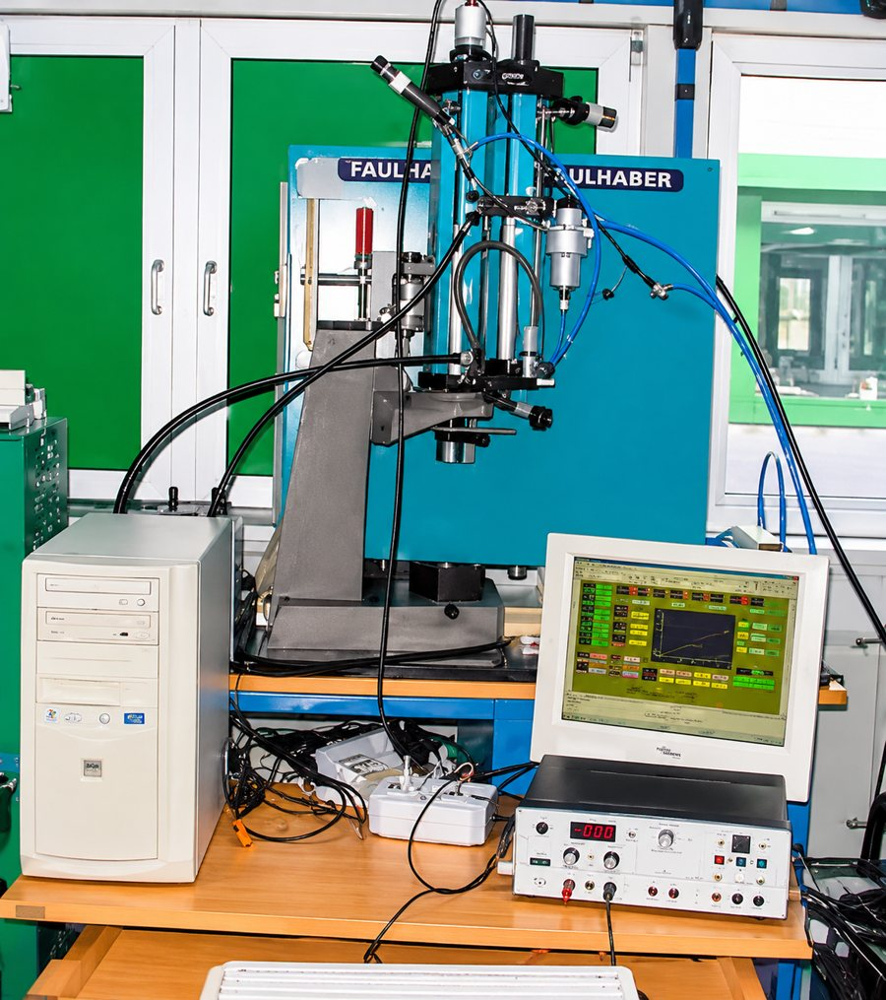

Stage 1 of 7 · 2005 – 2006
MSc Mechatronics · industrial research
Hochschule Ravensburg-Weingarten × Tox-Pressotechnik, Germany
“Development and analysis of a non-linear mathematical model for the position control of a pneumo-hydraulic servo system and hardware-in-loop simulations”
Supervisors: Prof. Dr.-Ing. Konrad Wöllhaf, Prof. Dr.-Ing. Holger Voos; industry: Dipl.-Ing. (FH) Albert Rankel
- The question ·
- How do you position a pneumo-hydraulic press actuator precisely when its physics is strongly nonlinear?
- The approach ·
- Built a detailed nonlinear Simulink/Stateflow model (orifice flow, several friction models, rate limits, saturation), validated it against measurements on the real system, then designed and tested controllers in real time with hardware-in-the-loop.
- What I learned ·
- A trustworthy physics model is what makes real-time control on real hardware possible.
Industrial machineryFluid power
Nonlinear physics modellingFriction modelsLinear controlHardware-in-the-loopMATLAB/Simulink & StateflowdSPACE
Then: dSPACE GmbH (2006–08), integrating ESP, ABS and AWD controllers on HIL simulators at GM Europe.
